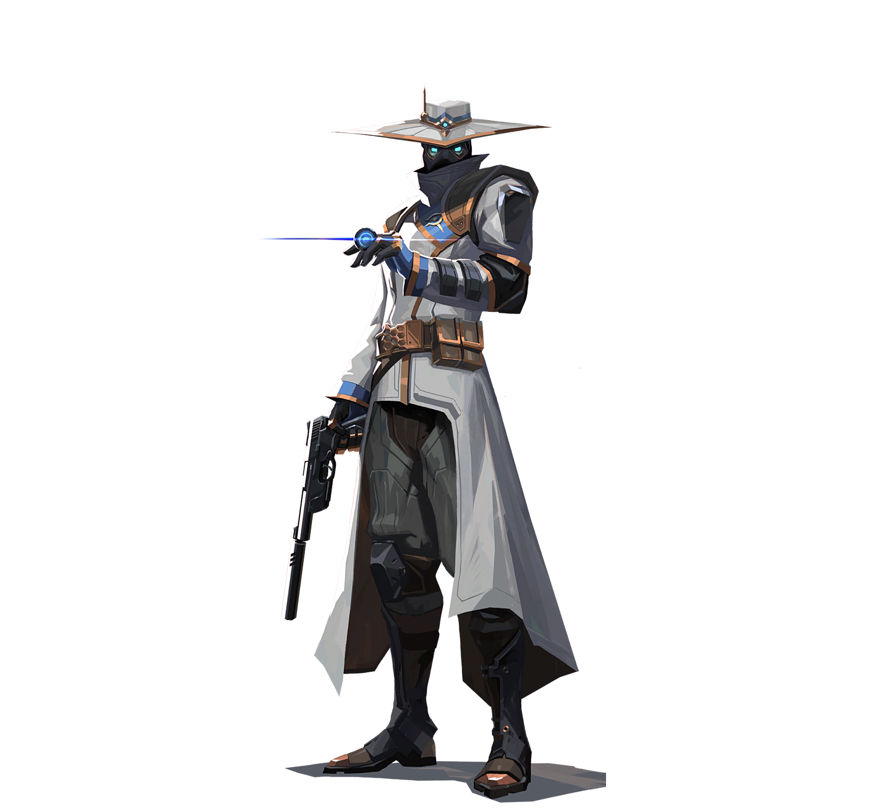
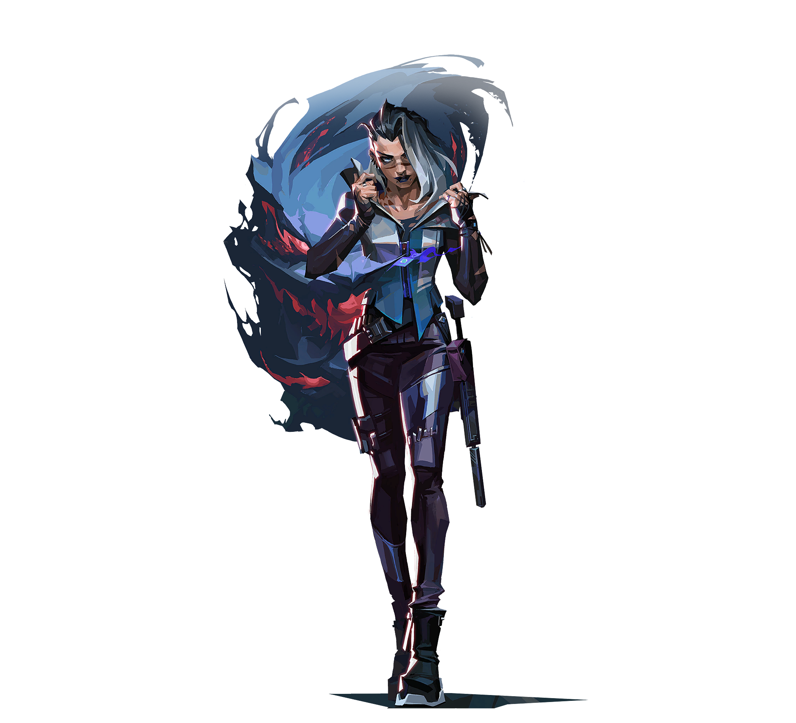
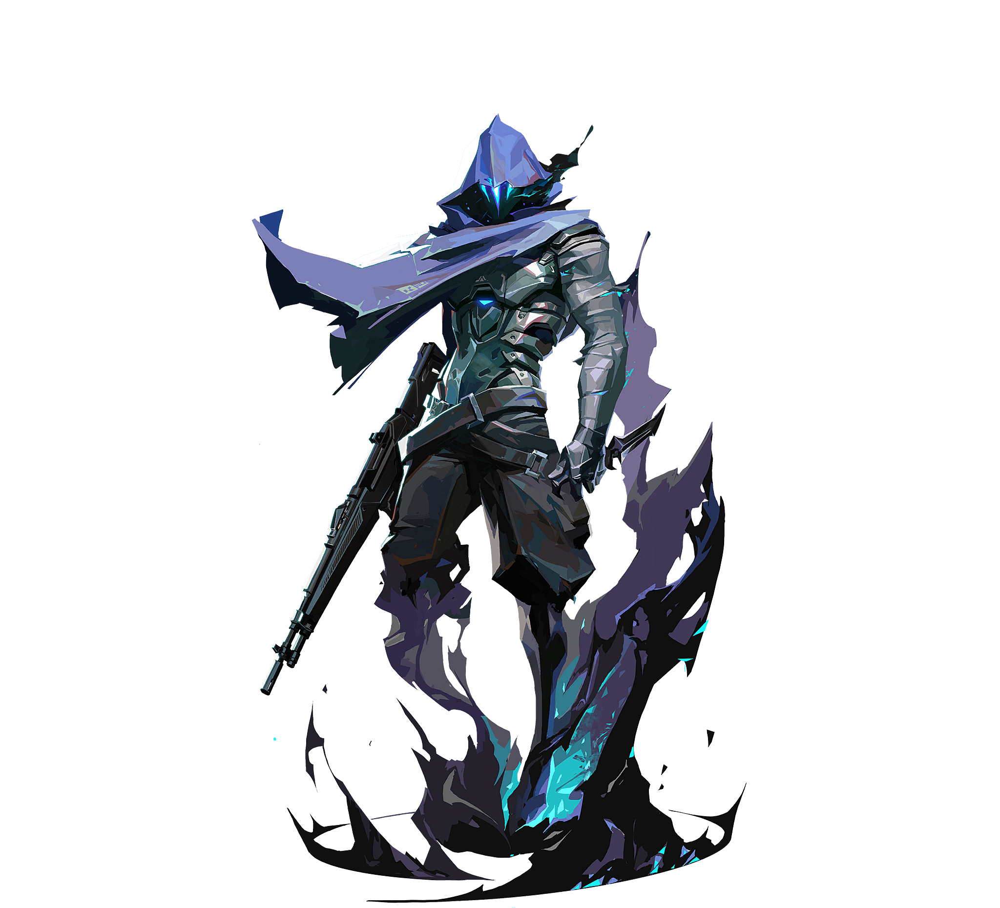
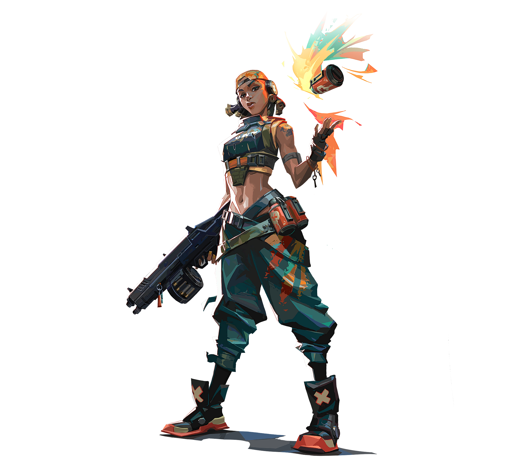

Sentinels
sentinels are all about setting up the enemy team for failure, sentinels are like the support for the team whether with traps, heals or simply by destroying the enemy

Initiators
When you need someone to open up gaps for you to enter sites or get a kill you call the initiators, their utility is all about setting up their team to take space

Controllers
When you enter a site you need to close some portions of it to check the rest of the site safely, this is when the controllers come in with their smokes to isolate some parts of the maps

Duelists
If you ever have to fight over a space in a map you need your duelists to step in because well, they take the duels its where the name came from